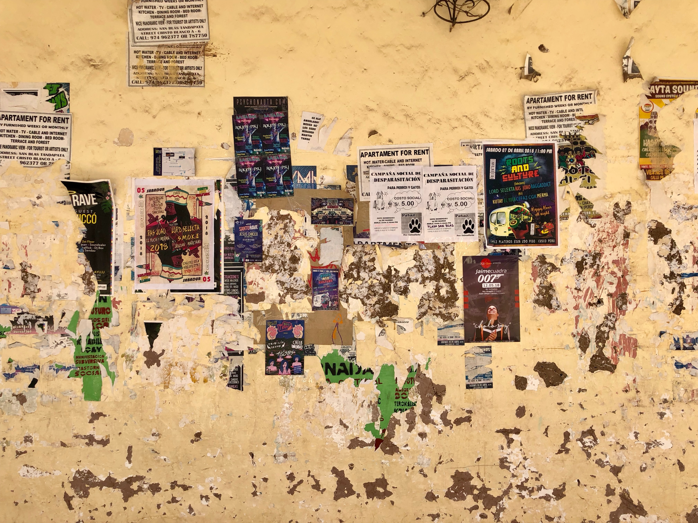

하루일과
1. 게임리뷰
2. 애드센스
3. 영어공부
게임리뷰
게임 포스팅은 매일 하루에 1개 올린다.
글쓰는
습관
을 만든다.
글을 어떤식으로 쓰면 좋을지 5분안에 1000자를 쉽게 쓰는 것을 목표로 한다. 그리고 앞으로 어떤 컨텐츠를 만들지 고민해보고 어떠한 문장의 패턴들로 글을 써나갈까 고민을 해본다.
포스팅 종류는 사전예약, 출시예정, 모바일게임 리뷰로 나눈다. 